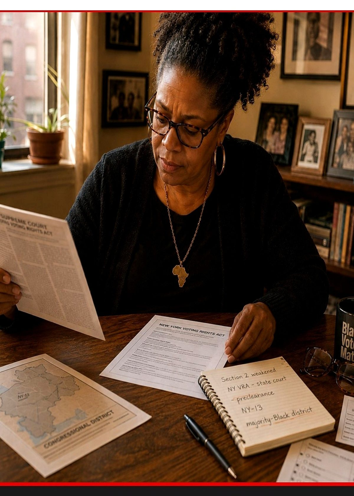
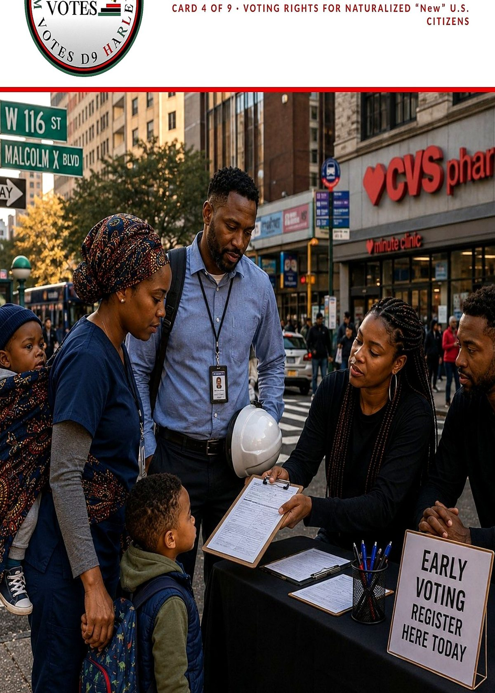
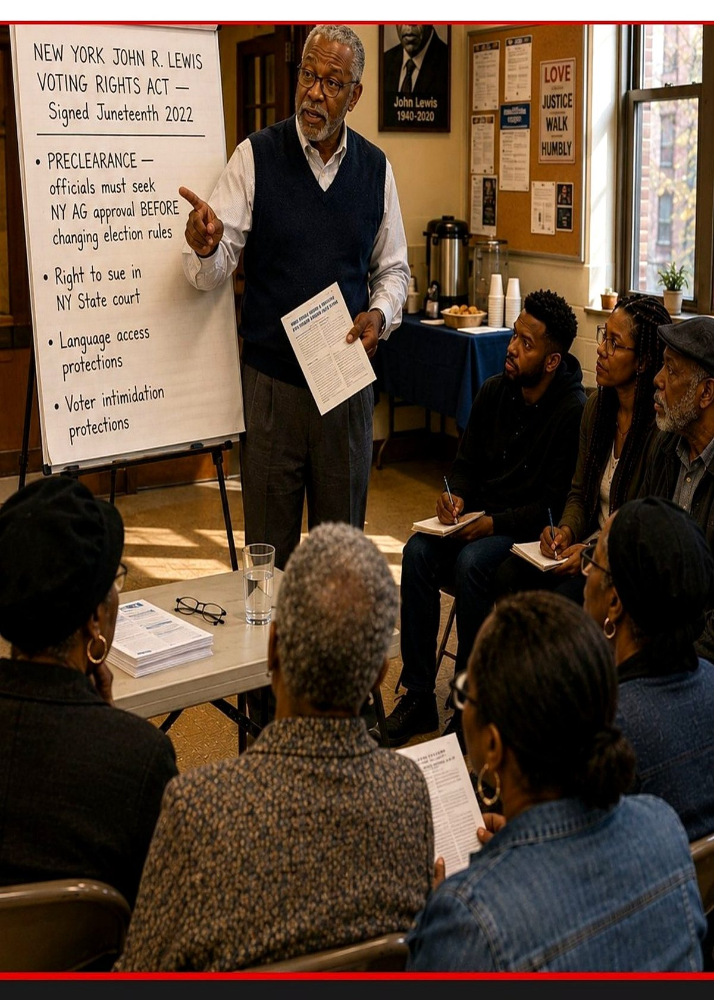
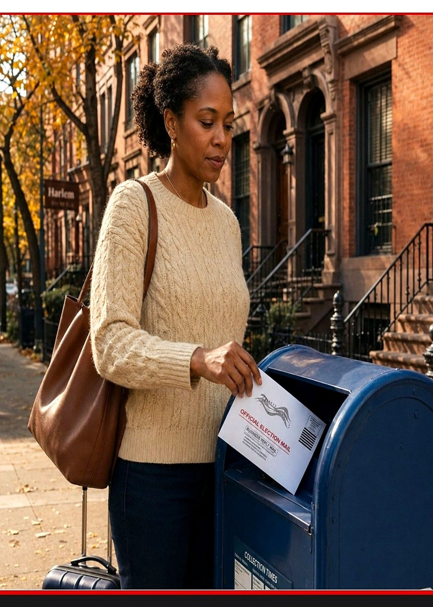
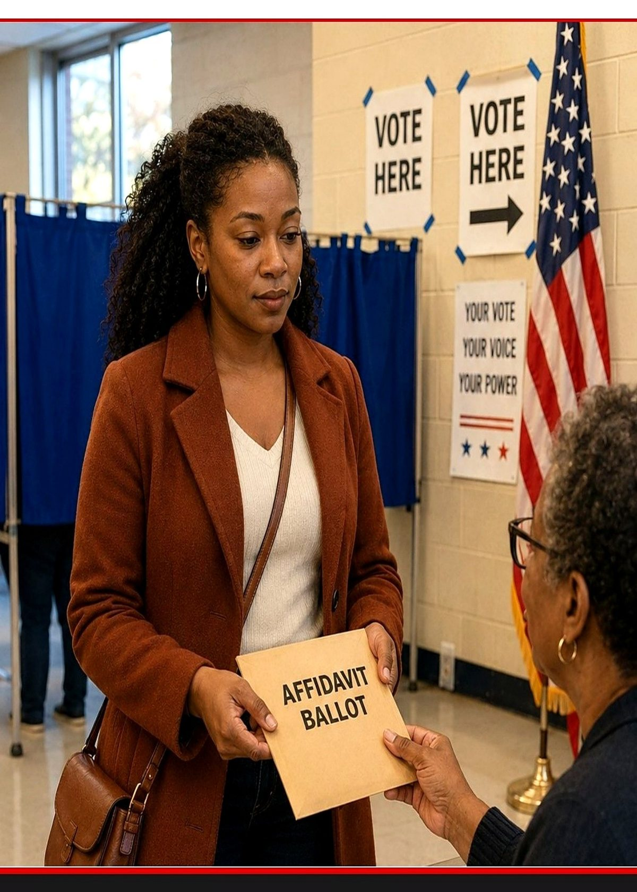
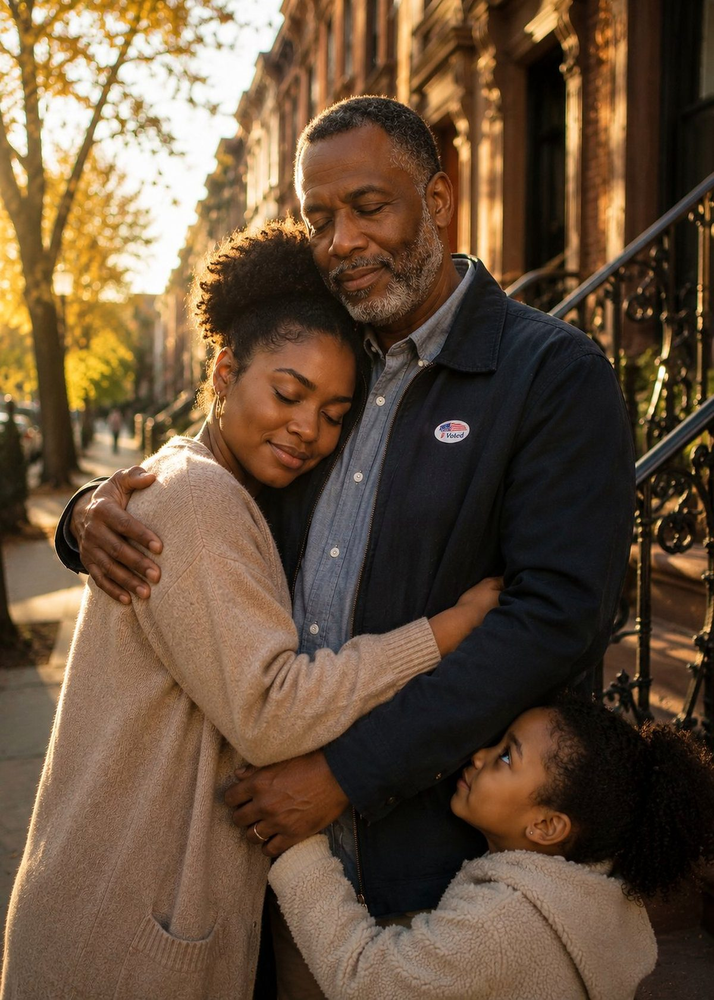

Nine neighbors. Nine situations. Nine reasons New York’s voting laws matter right now.

Harlem, 30 years. The federal tool that protected her vote just got weaker. New York’s did not.
A 14-year voter. A REAL ID that may not count. Get your documents in order now.
18, in foster care, registering for the first time. Her ID still says Jean. She has been Jeannine since middle school.

A citizen since 2021. A baby on her back. A choice she is weighing on her own block.

A Harlem poll worker for 20 years. He’s watched the federal VRA rise and fall, and was hopeful when New York built its own.

Out of town the week of November 3. Mailed her ballot two weeks early — while the postmark rule still counts.

Brooklyn to Harlem this spring. Forgot to update her registration — so she asked for an affidavit ballot.

Came home in 2022. Re-registered on his way out. Has voted in every election since — and he’s telling his brother the rules have changed.
Same table, two forms. One signs up to vote this year — the other is locked in two years early.